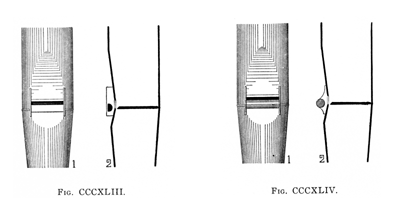

|
Orchestral Violin English Viole d'Orchestre French Violin English |
Viol d'Orchestre French? Viola d'Orchestra (unknown) Scharfgeige German |
At the Inventions Exhibition of 1885, William Thynne introduced a new stop of his invention which he named Viole d'Orchestre. (That instrument was later moved to Tewksbury Abbey.) Audsley considered it a near-perfect imitation of the orchestral violin. Ironically, there is no such instrument called �viole d'orchestre�; the French call the orchestral violin violon. Thynne's scale for this stop varied from 2-3/4" to 1-1/2" at 8' C. Later builders used even smaller scales, down to 1-1/16". Audsley specifies a 2/9 to 1/3 mouth, cut up 1/4 to 1/3. The Orchestral Violin is commonly considered to be the keenest string stop in the organ, producing the highest upper frequency content obtainable from flue pipes. It is invariably found at 8' pitch, except on some theatre organs which unify it to other pitches. It was most popular in the first half of the 20th century.
The illustrations reproduced here are Audsley's; click on them for larger images. Figure CCCXLIII is a Thynne C pipe.
All known examples of Orchestral Violin and Viola d'Orchestra are given below. No examples are known of Scharfgeige. Contributions welcome.
Orchestral Violin 8', String Organ; Memorial Auditorium, Chattanooga, Tennessee, USA; Austin 1925.
1st, 2nd, 3rd, 4th, 5th, & 6th Orchestral Violin 8', String Organ; John Wanamaker Store, Philadelphia, Pennsylvania. This division actually contains no less than 18 individual ranks of Orchestral Violins, six each at normal pitch, flat celeste, and sharp celeste.
Viola d'Orchestra 8', Organo Terzo; St. Luke's Chapel, Greenwich Village, New York City, New York, USA; Moller 1930.
Viola d'Orchestra 8', Choir; Girard College Chapel, Philadelphia, Pennsylvania, USA; Skinner 1928.
See the Sound Files appendix for general information.
| Viol d'Orchestra 8', Swell | Prudhoe Methodist Church, Northumberland, Scotland | arpeggio | St. Anne |
|
Original website compiled by Edward L. Stauff. For educational use only. OrchViolin.html - Last updated 27 September 2006. |
Home Full Index |